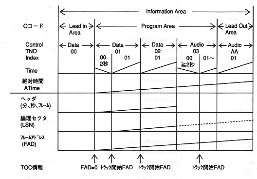
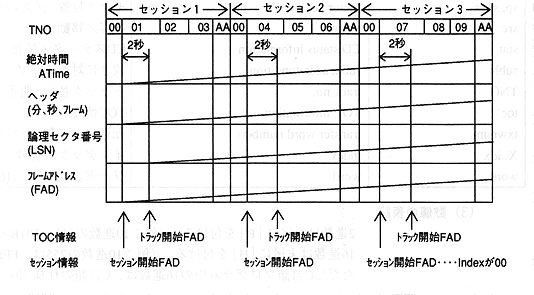

Return to previous page ｜ Return to menu ｜ Go to next page
-
2.2 Disk layout
-
(1) Track layout
- Figure 2.1 shows the relationship between the track structure and the access key that specifies the position on the disc.

Figure 2.1 Relationship between track structure and access key
-
(2) Multi-session layout

Figure 2.2 Multisession layout
Return to previous page ｜ Return to menu ｜ Go to next page